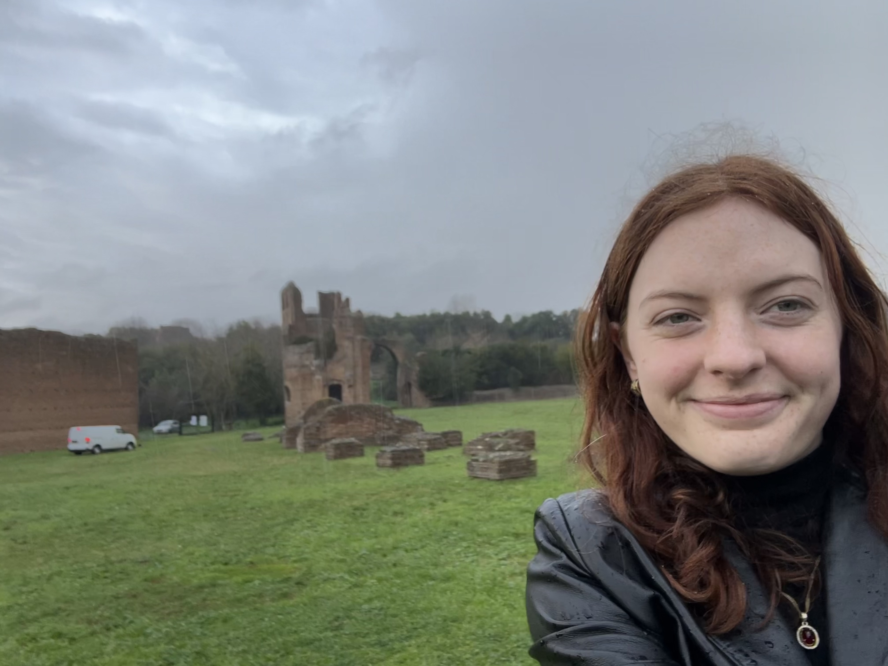
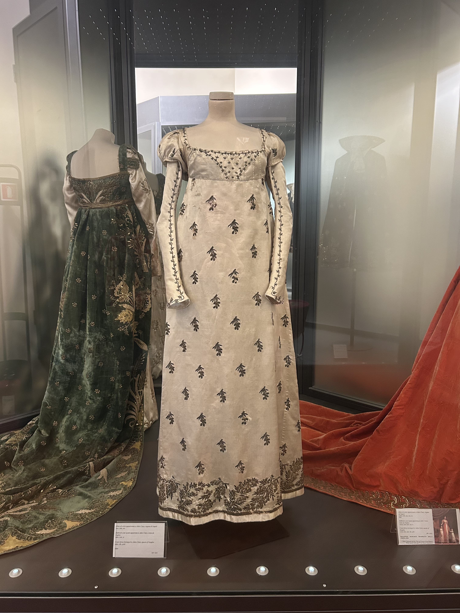
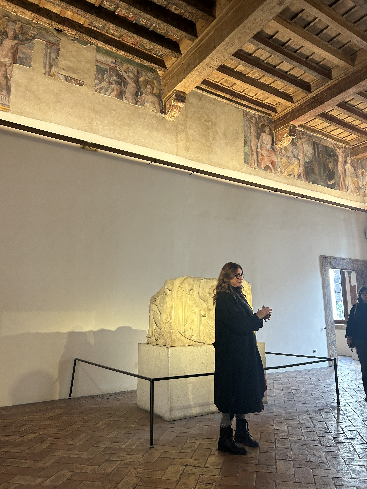
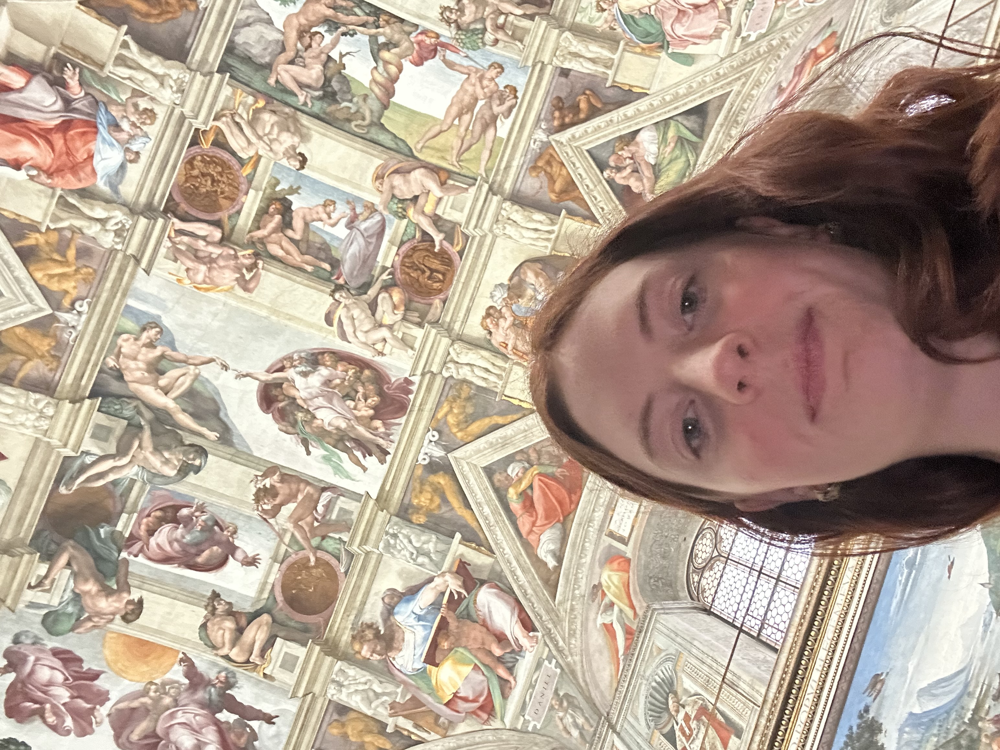
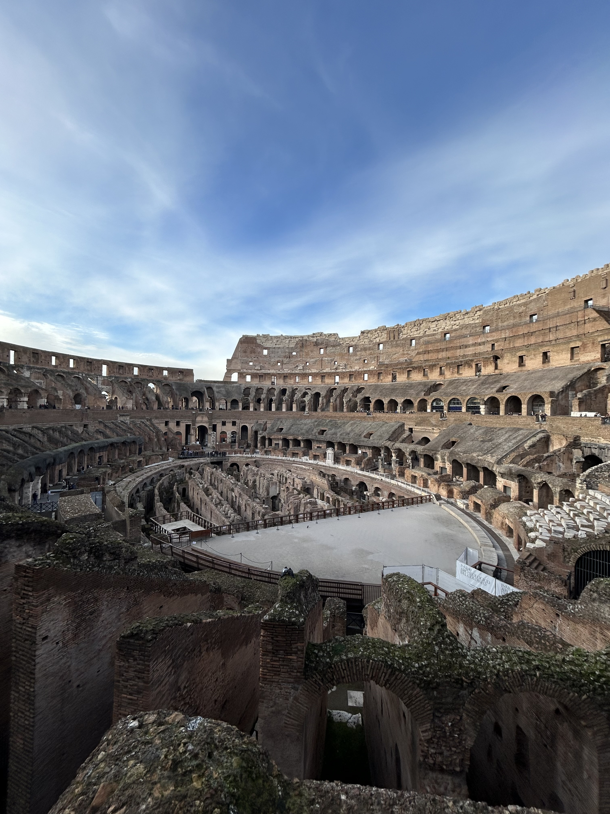
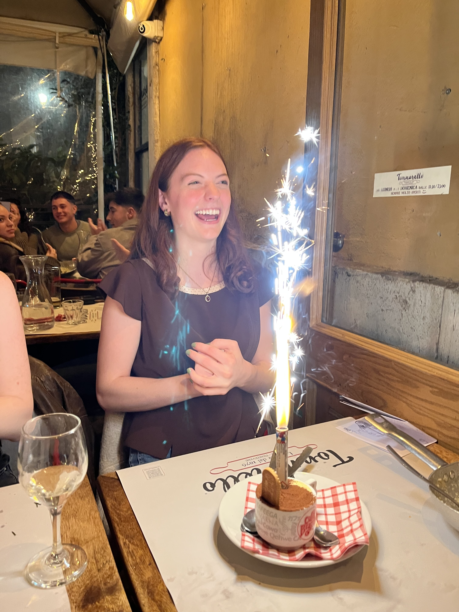
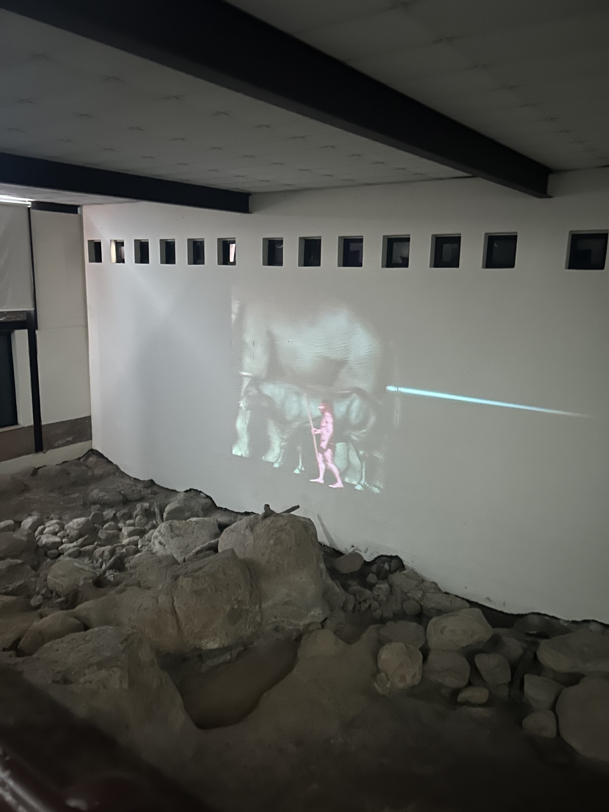
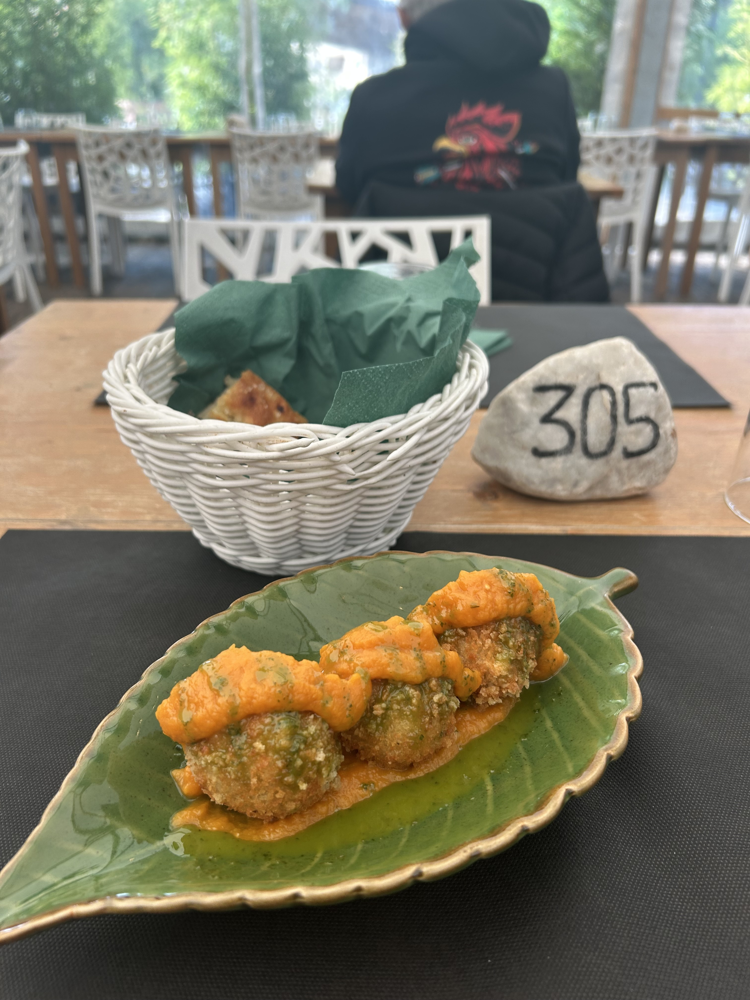

January 28, 2025
Started my day going to Villa di Massenzio which was a bit of a haul. Took a bus that about 30 minutes southeast. One lady got off on this stop and went my direction and I realized she was opening the museum because I had gotten there right at opening (10am) LOL. Saw the Mausoleum some guy built for his son and there was a chariot racing zone. Fun area as well, this was off the Appian Way.
I was going to go to Museo di Mura but the bus took 40 minutes and I decided to just take the bus home. I also realized Museo di Mura is "Museum of Walls" and is just about how the Romans built walls. Went shopping at Zara and Mango! Shopped for like two hours, but didn't buy anything. Then I went to the Napoleon Museum that was about Napoleon and his family. There was lots of info in English so I feel like I learned a lot about them! I also liked the dresses because they reminded me of Bridgerton.
January 29, 2025
Had all three of my classes today (that is art history, travel writing, and italian cinema) In art history, we went to Palazzo Altemps (Altemps palace) and learned a lot about the Greek and Roman gods. I had to present a little info about Hermes. Here's my professor telling us about the birth of Venus statue behind her. I like her a lot, she always thinks we are bored and we are very much not bored.
For travel writing, we went to botanic gardens and trastevere.

Then for cinema, we had a director of photography tell us about what he did. We filmed a short film where we all had to act which was surprisingly fun!
January 30, 2025
Birthday! Went to a guided tour of the Vatican museums and the Sistine Chapel which was very cool. Snuck a selfie in the Sistine Chapel where you are not supposed to take pictures.
Got pizza for lunch and got a drink and a shot! Then went to the Colosseum which was also fabulous!
We went to the Roman Forum for my Art History class, so I learned a lot about it which was cool. Then, I went home and Abby surprised me for my birthday! We had a fabulous weekend.
February 6, 2025
Today, I went to the Museo di Casal de' Pazzi which was about human evolution and things from millions of years ago. It was very small, and a very helpful man gave me an hour long tour. There was also an awesome video.
Then, I went to a restaurent that grows there own food. No one spoke English, but was able to order these vegan chickpea "meatballs" with pumpkin sauce. So good!
